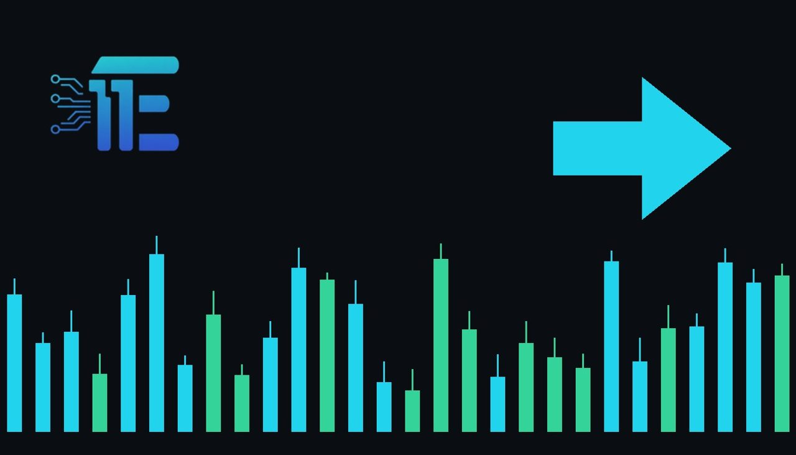

Geopolitical Tensions Complicate Gold Outlook, Says Industry Expertភាពតានតឹងភូមិសាស្ត្រនយោបាយធ្វើឱ្យទស្សនវិស័យមាសមានភាពស្មុគស្មាញ
XAU/USD impact: ◆ Mixedផលប៉ះពាល់លើ XAU/USD: ◆ ចម្រុះ

Ongoing Middle East tensions are complicating the market outlook for gold while central bank purchases continue to support demand. This dynamic influences safe-haven demand and physical market fundamentals for XAU/USD.
ភាពតានតឹងនៅមជ្ឈិមបូព៌ាកំពុងធ្វើឱ្យទស្សនវិស័យទីផ្សារមាសមានភាពស្មុគស្មាញ ខណៈពេលដែលការទិញរបស់ធនាគារកណ្តាលបន្តគាំទ្រដល់តម្រូវការ។ កត្តាទាំងនេះមានឥទ្ធិពលលើសុវត្ថិភាព និងជាមូលដ្ឋានគ្រឹះសម្រាប់ XAU/USD។
Geopolitical tensions in the Middle East are complicating the broader outlook for gold, according to Max Baecker, president of American Hartford Gold. Even as these regional conflicts create a complex market backdrop, steady central bank buying continues to provide a solid foundation of underlying demand for the precious metal.
ភាពតានតឹងភូមិសាស្ត្រនយោបាយនៅមជ្ឈិមបូព៌ាកំពុងធ្វើឱ្យទស្សនវិស័យទូទៅសម្រាប់មាសមានភាពស្មុគស្មាញ យោងតាមសម្តីរបស់លោក Max Baecker ប្រធានក្រុមហ៊ុន American Hartford Gold។ ទោះបីជាជម្លោះក្នុងតំបន់ទាំងនេះបង្កើតឱ្យមានបរិយាកាសទីផ្សារស្មុគស្មាញក៏ដោយ ក៏ការទិញជាបន្តបន្ទាប់ពីសំណាក់ធនាគារកណ្តាលនៅតែបន្តផ្តល់នូវមូលដ្ឋានគ្រឹះដ៏រឹងមាំសម្រាប់តម្រូវការលោហៈមានតម្លៃនេះ។
The transmission channel for these developments to XAU/USD primarily operates through safe-haven demand and broader macroeconomic sentiment. When geopolitical tensions persist alongside official sector purchases, market participants evaluate the balance between risk aversion and broader economic indicators.
ច្រកបញ្ជូនសម្រាប់ព្រឹត្តិការណ៍ទាំងនេះទៅកាន់ XAU/USD គឺដំណើរការជាចម្បងតាមរយៈតម្រូវការទីជម្រកសុវត្ថិភាព និងអារម្មណ៍ម៉ាក្រូសេដ្ឋកិច្ចទូទៅ។ នៅពេលដែលភាពតានតឹងភូមិសាស្ត្រនយោបាយនៅតែបន្តកើតមានទន្ទឹមនឹងការទិញរបស់ស្ថាប័នផ្លូវការ អ្នកចូលរួមទីផ្សារធ្វើការវាយតម្លៃតុល្យភាពរវាងការជៀសវាងហានិភ័យ និងសូចនាករសេដ្ឋកិច្ចទូទៅ។
A supportive environment for gold typically arises when intensifying regional conflicts drive robust safe-haven demand or when central banks maintain steady acquisition programs. Conversely, potential pressure on XAU/USD can emerge if geopolitical tensions ease, reducing safe-haven premiums, or if broader economic conditions shift focus toward yield-bearing assets.
បរិយាកាសគាំទ្រសម្រាប់មាសជាទូទៅកើតឡើងនៅពេលដែលជម្លោះក្នុងតំបន់កើនឡើងជំរុញឱ្យមានតម្រូវការទីជម្រកសុវត្ថិភាពខ្លាំង ឬនៅពេលដែលធនាគារកណ្តាលរក្សាកម្មវិធីទិញថេរ។ ផ្ទុយទៅវិញ សម្ពាធអវិជ្ជមានលើ XAU/USD អាចកើតឡើងប្រសិនបើភាពតានតឹងភូមិសាស្ត្រនយោបាយថយចុះ ដែលធ្វើឱ្យបុព្វលាភសុវត្ថិភាពធ្លាក់ចុះ ឬប្រសិនបើលក្ខខណ្ឌសេដ្ឋកិច្ចទូទៅប្តូរការផ្តោតអារម្មណ៍ទៅលើទ្រព្យសកម្មដែលផ្តល់ផលចំណេញ។
Traders monitoring XAU/USD should watch for further updates regarding Middle East developments and official central bank bullion acquisition data. Tracking shifts in broader market sentiment and official policy announcements will also provide key insights into future price direction.
អ្នកជួញដូរដែលតាមដាន XAU/USD គួរតែតាមដានព័ត៌មានថ្មីៗបន្ថែមទៀតទាក់ទងនឹងការវិវត្តនៅមជ្ឈិមបូព៌ា និងទិន្នន័យនៃការទទួលបានមាសរបស់ធនាគារកណ្តាលផ្លូវការ។ ការតាមដានការផ្លាស់ប្តូរអារម្មណ៍ទីផ្សារទូទៅ និងសេចក្តីប្រកាសគោលនយោបាយផ្លូវការក៏នឹងផ្តល់នូវការយល់ដឹងសំខាន់ៗផងដែរអំពីទិសដៅតម្លៃនាពេលអនាគត។
Key takeawaysចំណុចសំខាន់ៗ
- Middle East geopolitical tensions are complicating the outlook for gold.
- ភាពតានតឹងភូមិសាស្ត្រនយោបាយនៅមជ្ឈិមបូព៌ាកំពុងធ្វើឱ្យទស្សនវិស័យមាសមានភាពស្មុគស្មាញ។
- Central bank buying continues to provide underlying support for demand.
- ការទិញរបស់ធនាគារកណ្តាលបន្តផ្តល់ការគាំទ្រជាមូលដ្ឋានដល់តម្រូវការមាស។
- Safe-haven demand remains a key driver for XAU/USD market dynamics.
- តម្រូវការទីជម្រកសុវត្ថិភាពនៅតែជាកម្លាំងចលករដ៏សំខាន់សម្រាប់ទីផ្សារ XAU/USD។
Original commentary by THE MARKET CODE, based on public reporting from Yahoo! Finance: GC=F News. Written with the help of AI. Educational only, not financial advice.
មតិវិភាគដើមដោយ THE MARKET CODE ផ្អែកលើការរាយការណ៍សាធារណៈពី Yahoo! Finance: GC=F News។ សរសេរដោយមានជំនួយពី AI។ មាតិកាអប់រំប៉ុណ្ណោះ មិនមែនជាដំបូន្មានហិរញ្ញវត្ថុទេ។